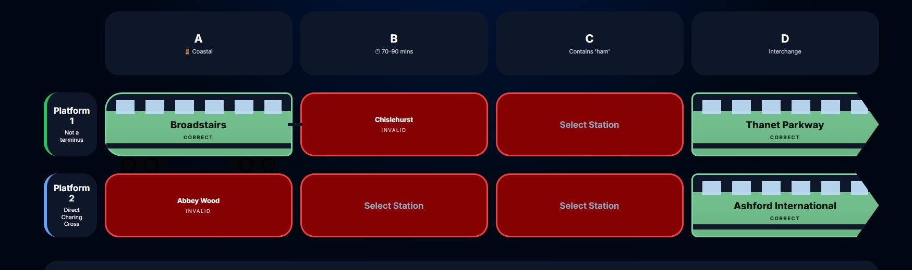

Rules
🎯 The Objective
Each day you'll be given a grid of eight stations.
Think of it as four station announcements across two platforms.
Your challenge is to work out what connects the stations, identify the missing pieces of the journey, and complete the route.
Some puzzles are based on geography. Others use journey times, station names, railway terminology, or quirks of the network. Every puzzle is different, but every solution follows a route.
Solve all four announcements correctly and you'll unlock the Special Announcement clue.
🖼 Example Puzzle

How to read the puzzle
- Each row represents a platform.
- Each platform contains four station announcements.
- The clue on the left provides information about that platform's route.
- The clues above each column provide additional hints.
- Select stations that satisfy both the platform clue and the column clue.
- Correct answers appear in green.
- Incorrect answers appear in red.
- Complete all announcements to reveal the Special Announcement clue.
💡 A Tip for New Players
Don't try to solve the entire puzzle at once.
Start with the clue that seems easiest, place a station, and use that information to narrow down the remaining possibilities.
Every correct announcement brings you one stop closer to the destination.
🎟 Tickets
Tickets are your lives. Each incorrect station selection costs one ticket. Use all your tickets and the journey ends.
🎟 Standard Ticket
- 6 tickets
- No timer
- Take your time and enjoy the journey
⏱ Express Service
- Timed challenge mode
- Same puzzle
- Beat the clock before departure